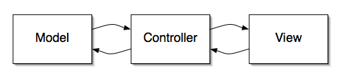
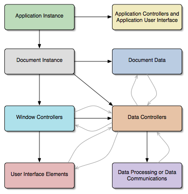
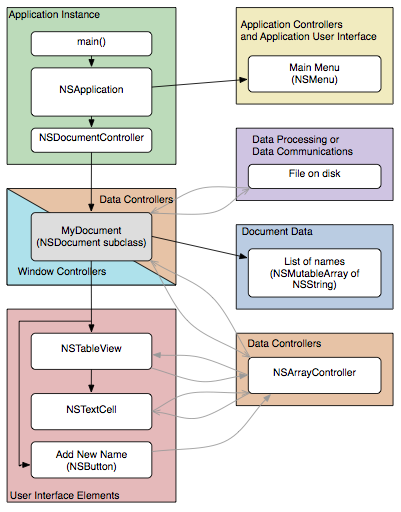

Please note: this article is part of the older "Objective-C era" on Cocoa with Love. I don't keep these articles up-to-date; please be wary of broken code or potentially out-of-date information. Read "A new era for Cocoa with Love" for more.
Application Design in AppKit
This is a discussion of high-level application design in Cocoa that aims to explain the major class roles in an AppKit application and how they are connected. I'll show you much more detail than simply "Model-View-Controller" and I also give a specific example of how all the concepts apply to a real application.
The anecdote
The other day, I was showing a friend how to program in Cocoa. She is a very good programmer but has never really programmed a user-application — working almost exclusively on embedded and server applications.
The experience reminded me that even good programmers can be unaware of basic design traits of user-applications which, while common to user-applications on all platforms, are not common to all programming.
So even though it's more "novice" than my regular fare, it would appear that even simple topics can be useful to advanced programmers.
A starting point
"Model-View-Controller" is the term normally used to describe the structure of modern applications. Almost every discussion of application design begins with it and I guess I will too. It looks like this:
Your document data (the "model") notifies the intermediary (the "controller") and it tells your user interface elements ("the view") to update. Going back in the other direction, user actions in the user-interface trigger notifications to the intermediary which modifies the data.
The rationale may not be immediately obvious. Let me explain it this way:
- User applications are big and complex — even seemingly simple applications. To manage complexity, everything is compartmentalised. To keep the boundaries between compartments clean, connections between compartments should be simple and generic.
Obviously, you don't want the model and view to be the same thing because then, there is no separation at all and the application will be a tangled mess.
Direct connections between model and view are normally frowned upon because it creates a situation where they must know too much about each other's internal state to interoperate. Instead, a controller object (which knows about connective state but little else) is used to keep the interaction simple and generic.
Better than Model-View-Controller
These traits of Model-View-Controller are all good things but in reality, it says little about how to assemble an application. Real applications have many more traits in common than a separation between model and view.
A more complete diagram of a typical application's design would look like this:
In this diagram, solid black arrows indicate construction and hierarchic ownership. Feint gray arrows indicate communication in response to changes.
Application instance
The application instance incorporates the program entry point and the event loop (which handles all user events like mouse and keyboard actions). As the starting point of the program, the application instance constructs the other top-level objects in the program.
Application controllers
The term "Application User Interface" is used in this part of the diagram to refer to elements of the user-interface that are not part of the document or the main window.
These objects are constructed by the application at startup. They should only handle things which exist before the main window or main document is open or which fall outside the bounds of these areas. Example behavior here includes the application preferences window and the Mac OS X menu bar.
Document instance
This is the first point where a programmer begins to exercise significant control over the program's behavior. The document loads or constructs the program's data and constructs the windows to show it.
A common mistake is to think that your program doesn't have a "document" so you shouldn't model a document class. In reality, if a program does anything then it is changing some piece of data (a preference file, a set of objects for rendering in OpenGL, the result of a calculation). You should design your program with this piece of data as the document. Even if your program only has one window, even if it only works with the same piece of data, even if you aren't writing a "Cocoa Document-based Application"; you should always have a class at the heart of your program which can be called "the current document".
Window controllers
A window controller is the class responsible for loading a window and putting it on screen. The window controller is responsible for giving context to the views and controls within the window, connecting them to data controllers which will provide them with data.
It is common for window controllers to double as data controllers for some functions since the window controller knows the state required to make the connection. This is not a bad thing in itself but should be resisted in the long term since it leads to bloat in the window controller (which often has a lot of work to do already). Generic, data-specific controllers should be used for this task.
User Interface Elements
Where possible, these should be generic elements: buttons, text display, image display. They end up performing specific actions when connected (through controllers) to their contextually supplied data.
User interface elements are normally hierarchic. The screen contains windows; windows contain views; views contain subviews. One window is normally in front (main window) and one view within this window is normally the focus. The application's "event loop" will send keyboard actions, mouse events and menu selections to this focus object. Unhandled events get passed up through the hierarchy so that parents can handle events that their children don't handle.
The handling of events should be managed as low in the hierarchy as possible. Again, consolidation in parents leads to bloat. Even "small" applications can become very big.
Data Controllers
These should be as generic as possible. Their purpose should be to relay information from a source to a destination about data changes.
The simplest manifestation of a data controller is for a third-party to establish or enable the Observer design pattern between two objects.
The worst approach (sometimes called an anti-pattern) is an all encompassing arbiter object that receives every change request the program makes, performs the change and then updates everything that needs to be updated. This approach is unsustainable on an application-wide scale. Decomposition is key — data controllers should have small, focussed scope.
An example application
Now we'll look quickly at what this means in an AppKit-based application. This application is a simple program that creates and edits lists of names. I know that's a pretty trivial thing for a program to do but the example must be simple so I can describe it here properly.
You can download the project described in this diagram, although it isn't necessary to understand the discussion.
The application object is an unmodified NSApplication. This will almost always be the case in any Cocoa Application. You can achieve most customisation of the NSApplication object through data (in the Info.plist file) or by attaching an application delegate object (which can intercept control at predetermined points). The application instance handles our startup, event loop and contruction of documents (I have discussed how a Cocoa application loads in a previous post).
This application doesn't have any preferences or significant data outside the scope of the document, so the "Application Controllers" section just has the Main Menu in it.
Documents in AppKit act as both a data controller for the data (in this case, an array of strings) and the window controller for the main document window. The document handles saving and reading to and from any file on disk. This could be done with basic NSKeyedArchiver methods to turn an array of strings into an NSData object for writing to disk. The window is loaded automatically from the window NIB file (specified in the program's Info.plist file).
The NIB file for the document contains an NSArrayController which is connected to the list of names from the document via the appropriate keyPath. This allows the NSArrayController to issue key value observing notifications when it changes the array and similarly allows it to update automatically when something else changes the array on the document.
The NIB file for the document also contains the window, which in turn contains an NSTableView. The NIB file specifies that the NSTableView's only column (displayed using the NSTextCell) should get its data from the NSArrayController. In this way, the table is updated to display the list of names contained in the document.
The NSTextCell displays the name for each row and allows editing. If an entry is changed in this way, notifications are sent back through the NSArrayController to the document.
Similarly, the "Add New Name" button can add a new object by communicating with the NSArrayController, asking it to create a new object and insert it in the array, which triggers all relevant change propagations.
Conclusion
All of this may seem like a lot of work — setting up connections and controllers and notifications. When starting a new program, you may think that many of these elements don't apply to you. Be careful — don't chase false simplicity.
Remember, Cocoa was written to make the approach described in this article easier than the alternatives. Classes like NSArrayController and protocols like NSKeyValueObserving and NSKeyValueBindingCreation make connecting large amounts of data as simple as point and click in Interface Builder. In many cases, it ends up being faster than manually connecting a button or text field directly to a method on your document class.
You will always have change behaviors that cannot be connected using these generic objects but following the same structural patterns that they use will keep your application clean and make it work better within Cocoa.
Safely fetching an NSManagedObject by URI
Parametric acceleration curves in Core Animation